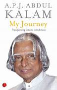

Books

Dr. APJ Abdul Kalam authored several books during his lifetime, covering a wide range of topics including science, technology, education, and his personal experiences. Here are some of his most notable books:
- Wings of Fire: An Autobiography: This is Dr. Kalam's autobiography, which provides insights into his early life, education, and his journey from a humble background to becoming one of India's most respected scientists. It is one of his most popular and widely read books."
- Ignited Minds: Unleashing the Power Within India: In this book, Dr. Kalam discusses the potential of India's youth and how they can play a crucial role in transforming the nation through their ideas, innovation, and hard work.
- India 2020: A Vision for the New Millennium: Dr. Kalam outlines his vision for India in the year 2020, emphasizing economic growth, technological advancement, and social development as key priorities for the nation.